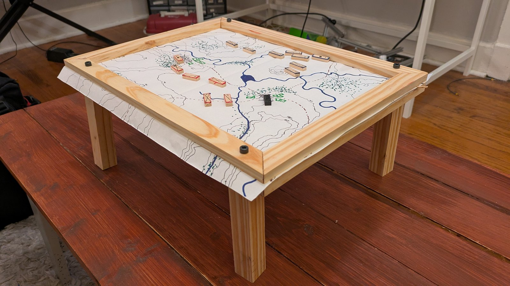
December 24, 2025
Ok, a bit longer than expected, but I've fully assembled the game table! I've also drawn a cute little contour map with some of the features that I want to explore! That one black piece on the board is 3D printed in PLA and I depressed a little neo magnet into its back. I know that heat can mess with magnetism, so I gave the hole a good amount of tolerance to so it would mostly just slot in. But I think it looks great! The next step is to make more game pieces, and then to design and build some kind of score/unit statistics tally chart. As I move around the piec ewith the cursor, it wants to rotate around the magnet. I'll have to either use 2 magnets, or use a bar magnet to prevent this rotation.
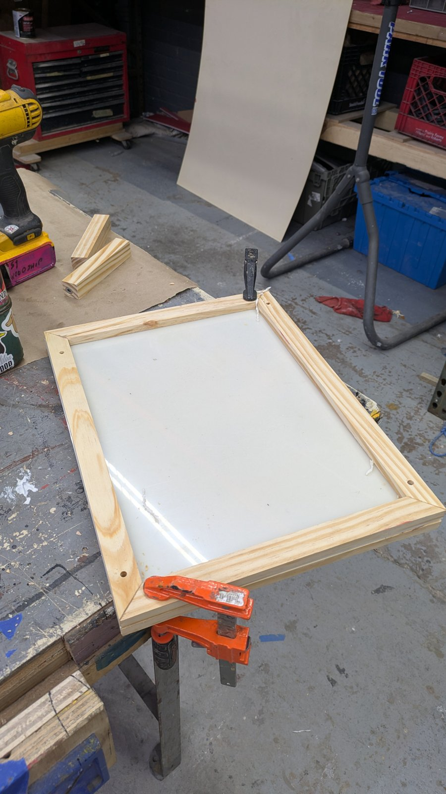
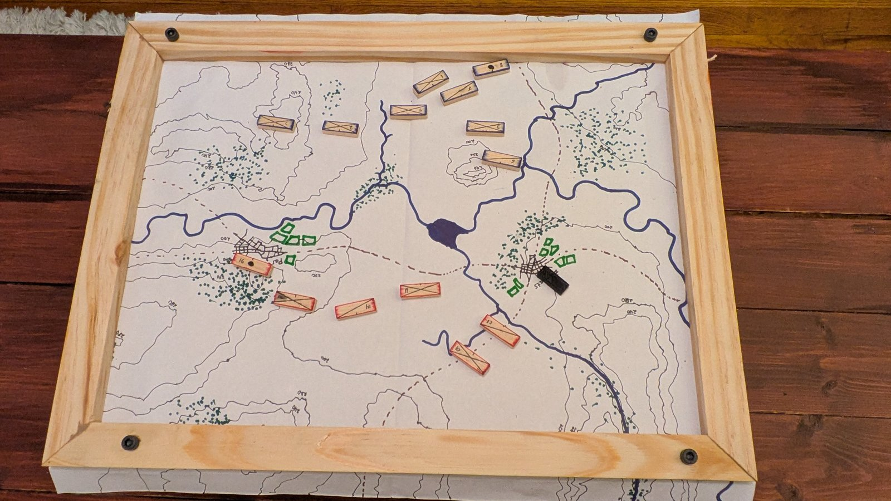
December 15, 2025
Ok, I found plenty of scrap pine 2x4's at my makerspace, so I'll use that. I'm thinking that the game board itself will be two rectangular frames that sandwich over an acrylic plate that will act as the rigid game board surface. Screws will pass through both halves of the frame and the plate and then screw into a wood insert in the table leg.
I decided to experiment with making the frame with miter joints. I took a lot of care to measure and draw the proper angle, and then line it up on the circle saw. I still had to touch up some slight overhangs on the disk sander, which I think is a good strategy to employ in the future. Another member had this awesome clamp specifically designed for making frames; imagine four rigid right angles that can be moved along a loop of seatbelt material, with a crankable feeder controlling the total perimeter. It could cinch up tightly around the corners of any rectangle. I put glue on the miter corners and will come back to this tomorrow.
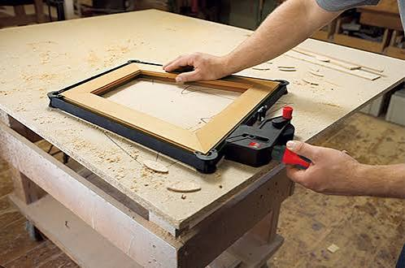
November 13, 2025
Introducing the new board game project!
Ok, so I honestly don't play board games much at all, but I was strangely compelled to make one. In brief, the game is inspired by 19th-century warfare, with players commanding regiments that can move freely around geographically-accurate maps. The gameplay is inspired from real battlefield tactics where geography and careful maneuvering determine the outcome of the game. The game is played on a raised table to allow the players to move the small pieces around the map accurately with magnetic cursors.
Historical inspiration
I'm saying the game is set during the Napoleonic Wars (1803-1815) but it could also represent most conflicts between western nations from the early 18th century to the mid-19th century, where foot soldiers fought in tight formations and wielded slow-firing muskets tipped with bayonets, horsemen charged with sabers and lances, cannonballs whizzed by overhead, and everyone dressed like they were on parade. The Seven Year's War, American Revolutionary War, War of 1812, Crimean War, and American Civil War could all more or less be represented by this game, and could add interesting maps and flavor.
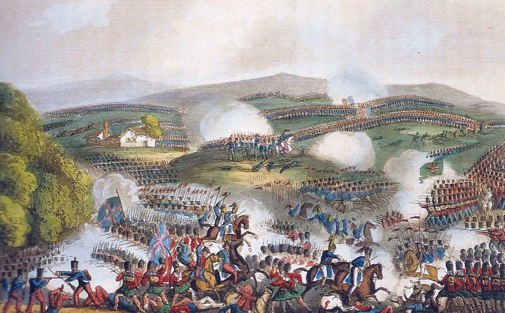
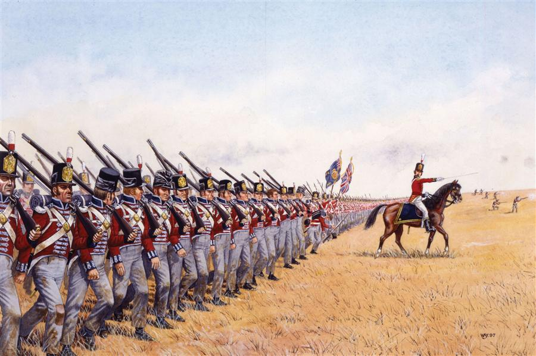
I grew up playing video games from the Total War series, where you fight large-scale battles from Ancient Rome to the Napoleonic era. I float high above the battlefield, and order thousands of soldiers to march, charge, retreat, or hold their ground. I can zoom in and see them engage in hand-to-hand fighting. I can pan out and see the waves of armored men crash into each other. I especially liked the Napoleonic setting because I felt there was a clean balance between infantry, cavalry, and artillery, which made each game feel interesting and different. The geography of the battlefield, and even the relative positions of each troop on the terrain seemed to matter a lot too. I'm an ecologist, and I wanted to make a board game to represent this time period because I wanted a physical medium to talk about geography and cartography, and tie it into the wider ecological picture.
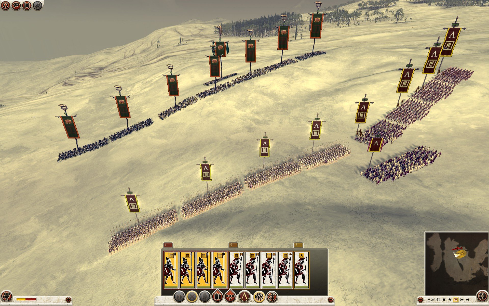
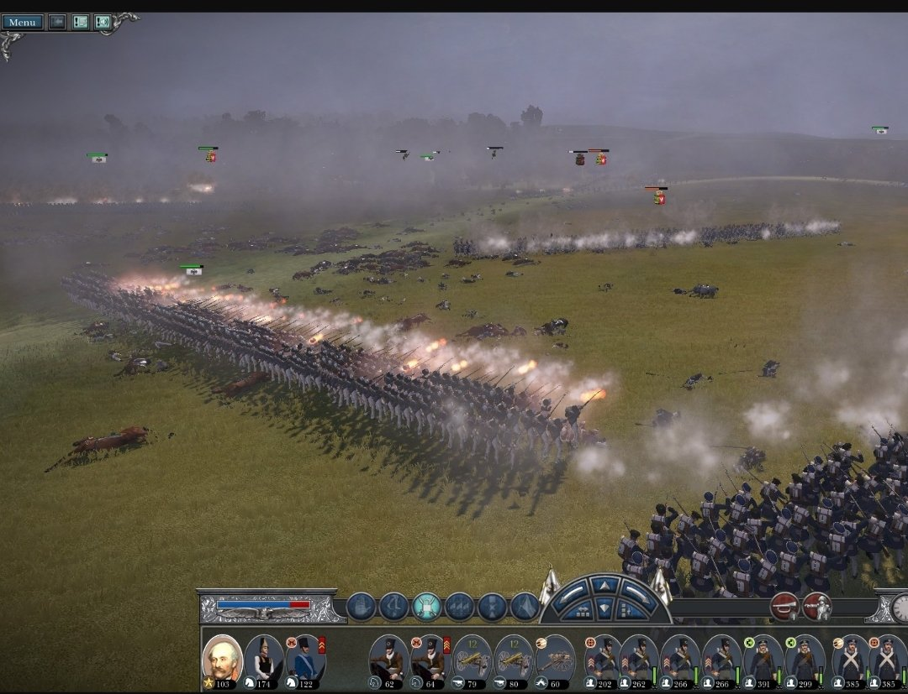
Ecology through a Wargame
I live in New York City, and as you drive around here you could be under the impression that Humanity has tamed nature with the power of excavators and bulldozers to build a comfortable world for ourselves. Few of us understand that when a wetland becomes a residential district, it will soon become a wetland again unless constant energy is exerted. When we pave right over natural features like that we lose sight of their power as well as their purpose. Napoleon paid very close attention to the geography of his surroundings and carefully chose his battlefields to give himself the strongest advantage. That could mean placing his artillery on the highest hill to keep the enemy in range, or keeping infantry safe from cavalry by setting their flank against a river, or advancing a group of light cavalry through a forest to set an ambush. These commanders understood the importance of the landscape on their strategic success, even if they weren't environmentalists themselves. When I'm out on a hike I'm constantly recognizing the geographic features I come across and try to tie it back to the wider ecosystem, how it's been changed by Humanity, and finally how I will attempt to cross it.
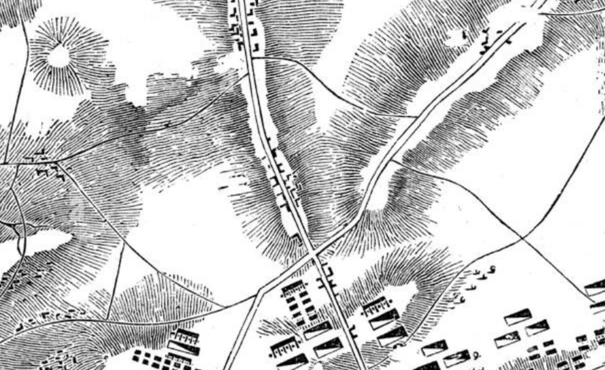
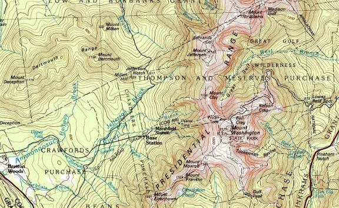
Tabletop Predecessors
I'm not the first person to try building a 19th-century warfare tabletop game. That distinction probably goes to Kriegsspiel, an infamously complex warfare simulator and teaching tool developed by Prussian military colleges in 1824 after their experience fighting Napoleon. I invite you to look into the game yourself, it is quite fascinating. The trouble is that Kriegsspiel is far from a light and fun tabletop game. Sure it has players and dice, but it's meant to be played 30 vs. 30, double-blind in two separate rooms, with an umpire running between them to ensure each team had the right (lack of) information. Games would play out in real time and cadets would spend hours or even days in stuffy rooms wearing their uniforms. Absolutely everything they could think of was modeled, including Fog of War, unit supplies, orders physically coming and going from command, and individual soldier numbers. All of this had to be calculated and recalculated constantly. The Total War computer games handle calculations like these effortlessly, and turn an accounting nightmare into an extremely enjoyable and almost relaxing experience.
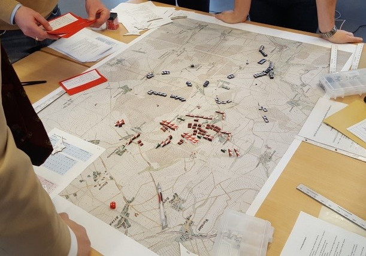
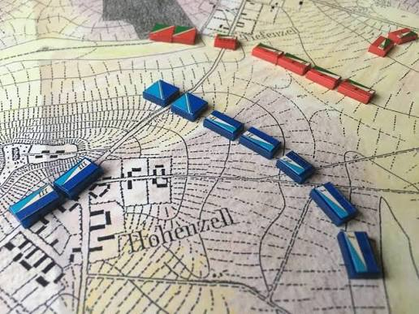
Another Data Point
While doing research for my board game I came across a new video game that had just been released called Lines of Battle by the indie developer Sophie Games. It is a turn-based strategy game also set during the Napoleonic Wars, at the same level of abstraction as Napoleon: Total War. They're both extremely similar in terms of mechanics; where each unit has a Soldier Count, Morale, Firing Range, Accuracy, Hand-to-Hand Fighting Skill, Movement Speed, and sensitivity to terrain. The turns in Lines of Battle are played simultaneously, which creates a flow that feels very similar to a real-time game. The biggest difference in feel is that Lines of Battle doesn't model individual soldiers and so can instead support larger armies, which raises the scale of the game a bit higher off the ground from Total War. And though its graphics make it look an awful lot like a board game, Lines of Battle is still too calculation-heavy to play without a computer.
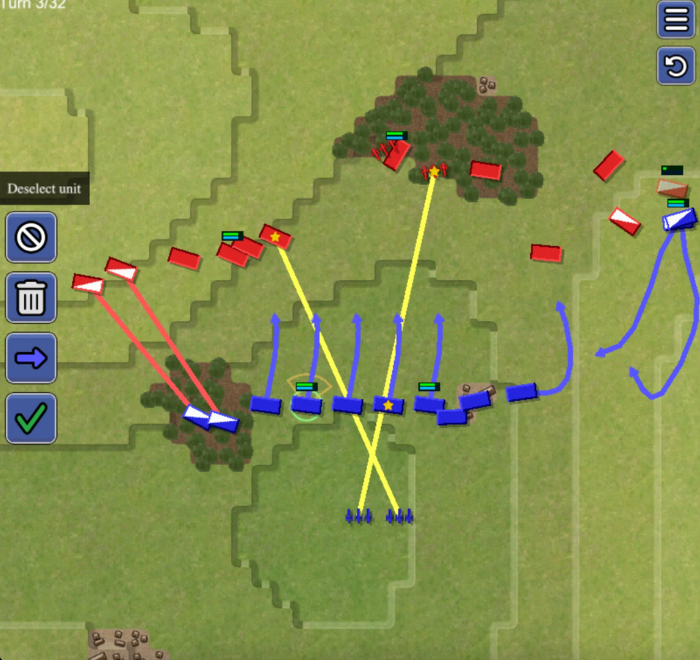
Game Plan
How will my game strike the balance between realism and abstraction? I'm really not sure but I need to do a lot of testplaying; that's why I'm building the game board right now. I'll use the following section to try to organize my thoughts about gameplay into different sections
Unit Types
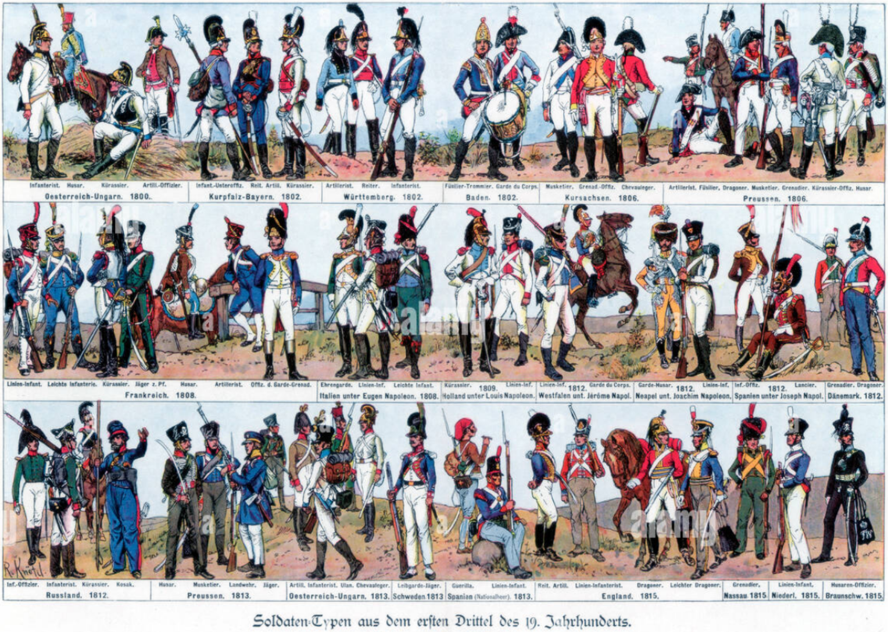
I like the era of musket battles and line formations because of the mix of soldiers, each having their specialized roles. The basic types of infantry, cavalry, and artillery have a lot more diversity and color that can make choosing the composition of your army a very strategic and worthwhile game mechanic. Below is a non-comprehensive list of the types of soldiers from that time:
- Infantry
- Line Infantry -Basic, well-rounded foot soldier. Armed with a musket and a bayonet, and ammunition. Moderate speed, morale, and discipline. Knows how to form into a square as a defense against cavalry attacks. Weak to attacks from the rear and sides.
- Light Infantry -Slight faster than line infantry on all terrains. Often fights in a looser formation. Might not be as competant at hand-to-hand combat.
- Grenadiers -Infantry trained to lead assaults, and often armed with grenades.
- Lifeguards -The elite infantry of an army. Goes by many different names depending on country. Can often help rally surrounding troops.
- Skirmishers -Light infantry that operates in loose formations, often used for scouting and harassing the enemy. Sometimes armed with more accurate, slower loading rifles.
- Militia -Much cheaper infantry than regular troops that is often less well-trained and equipped.
- Cavalry
- Heavy Cavalry -Heavily armored and armed cavalry, often used for shock charges and breaking enemy lines. Regional types included Cuirassiers and Carabiniers.
- Light Cavalry -Fast and agile cavalry, often used for scouting, screening, and harassing the enemy. Regional types included Hussars and Chasseurs.
- Dragoons -Armed with carbines and sabers, often used for both mounted and dismounted combat. Sometimes considered mounted infantry.
- Lancers -Armed with lances, made them highly effective in charges, but much weaker when attacked themselves.
- Artillery
- Cannon -A standard battlefield artillery piece used for long-range bombardment of enemy positions. Came in a variety of sizes and calibers.
- Howitzer -A versatile artillery piece capable of firing at high angles, effective against troops hiding behind cover.
- Mortar -An even more extreme version of the howitzer, used for very high-angle fire, often in sieges and urban warfare.
- Rocket Artillery -A specialized form of artillery used by a few nations at the time. Was highly inaccurate but had a significant psychological impact on the enemy.
- Horse Artillery -Any artillery piece moved by horses, allowing for rapid deployment and repositioning on the battlefield.
- Canister Shot -Not a type of artillery, but a type of round fired by an artillery piece. Instead of a solid ball, it contains numerous small metal balls, making it highly effective against troops at close range.
- Miscellaneous
- Engineers/Sappers -Specialized soldiers responsible for constructing defensive works. Could be interesting to explore modifications to the terrain.
- Generals Staff -It could be interesting to have a unit that represented the commanding officers of the army. Perhaps their presence could influence the morale of nearby troops, and attacking them could end the game. They could be mounted or on foot.
- Logistics -This type of unit doesn't exist in any Total War game as far as I'm aware, and may only make sense at higher levels of abstraction. This unit might be supply wagons that can transport equipment or reinforcement to soldiers.
Movement
I like how Lines of Battle handles movement in a turn-based game. Each turn, each unit can move a certain distance according to its stats and the terrain features. The player uses their mouse to draw a path for the unit to follow. As a board game, I think this can be further simplified into 2 interchangeable steps: Rotate, and Translate.
I want to experiment with using a divider used in drafting for measuring the proper movement distances on the board. Let's say the player wants to move a unit of line infantry. First they rotates the unit. Then they set the divider length to match the distance corresponding to that unit's movement score. It could be a number in millimeters measured out on a ruler, or a physical line on a unit information card that is matched to. The player then places one arm of the divider next to the unit's current position, then slides the piece up to the other arm. Lines of Battle has a few kinds of movement:
- Walk -The unit marches forward across the terrain. Lines of Battle calculates the total traversable distance of that turn based on the total distance spent on different kinds of terrain. Units move slower uphill, through forest and marshes, and across streams. Some features like buildings, cliffs, rivers, and lakes are fully nontraversable.
- Run -Lets them traverse a greater distance at the expense of energy and morale, but running into an enemy creates a charge which has special effects on damage and morale on both sides.
- Fallback -The unit moves backwards to a safer position. Walking backwards while facing the enemy preserves more morale than turning around and running away. A unit can't walk backwards as far as it can going forwards.
- Fire & Advance -The unit advances slightly while also performing a limited ranged attack. This probably has limited use in my board game because of the complexity of ranged attacks which I'll get to in a later section.
Dividers and Cursors
These pieces are small and to allow for precise board maneuvers without accidentally pushing other pieces out of place on the gridless board, I think it would be interesting to experiment with using magnets below the board to move the pieces. Each piece could have a small magnet on the bottom and beneath the board could be some kind of handle or cursor with another magnet to grab onto the piece. Each piece will have its own magnetic cursor that will stay attached for the whole game. Keeping one hand on the dividers and another hand on the cursor means that the actual game pieces on the board should never have to be directly touched. So far I haven't found any other games where components are moved around using magnets under the board, but I do understand that in order to make this possible the board must be elevated off the table surface to allow for space for the cursors and your hands, and that the board must be both rigid and thin to allow for the magnetic attraction to be strong enough while preventing structural problems.
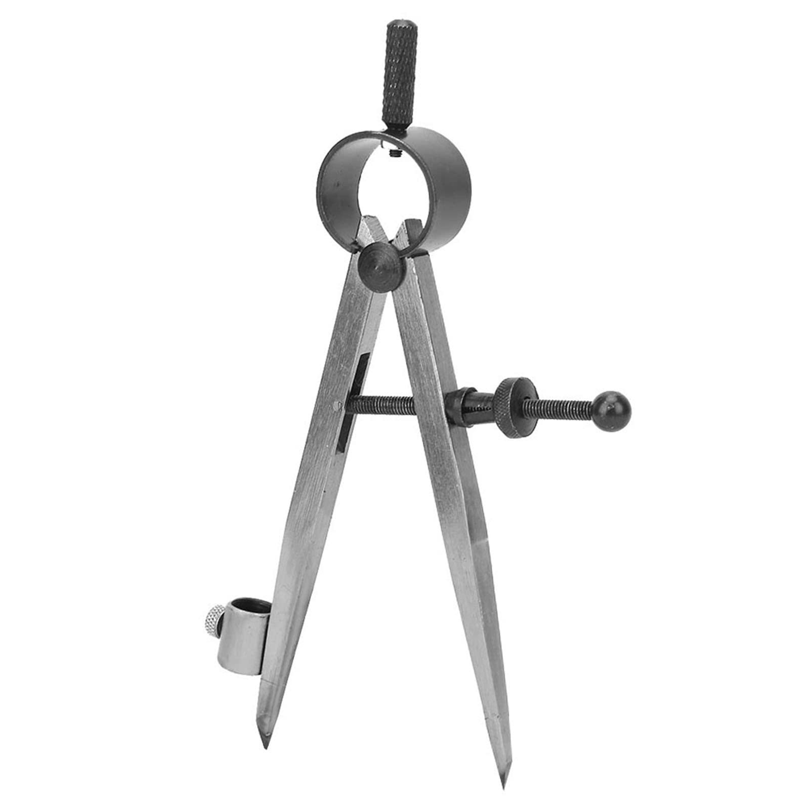
Combat and Recording Damage
Between all of the games I've researched, there are a lot of quantities ascribed to each unit that change throughout gameplay. I'll attempt to outline them here.
- Troop Number -The physical number of soldiers existing in the abstracted unit gamepiece. This number is important because it is a metric of the maximum amount of damage that unit can do, i.e. a unit with 100 muskets could kill some portion of 100 enemy soldiers per turn. If a unit loses many soldiers quickly, that could hurt its morale. Troop counts vary greatly between types of units and between different countries and armies. The organization of armies in this era is extremely complicated, and the standardizations done by Napoleon are one of his most famous contributions to warfare. That is to say that my board game will not attempt to have accurate number of soldiers per unit, nor is teaching 19th century military organization a goal of the game.
- Morale -A soldier's willingness to fight. If this value gets too low the unit may break and flee from the battlefield uncontrollably. Morale can be affected by pretty much anything; the number of soldiers, their rate of losses, their position relative to enemies and to each other, their exhaustion, and so on.
- Exhaustion -How tired a unit is. An exhausted unit may not be able to move as fast and be less effective in combat. They might also lose morale faster. A unit might have to rest to reduce exhaustion, which might mean spending turns not moving or attacking.
- Order/Discipline -This skill might correspond to the speed at which they move between formations and orders, and might influence the rate at which they lose morale.
- Ammunition -A straightforward number of how many more times a unit can fire, assuming all soldiers in a unit fire at the same time. Some systems allow soldiers to recover unused ammunition from fallen soldiers. This mechanic is more interesting and realistic for artillery I think, which makes their deployment more meaningful.
Number Tracking
A quick aside to keeping track of big numbers like these in a board game. I spent a lot of time researching systems that let the user reference quickly, allowed for easy updating, and were physically uncomplicated. Video games do a great job of keeping all the complicated statistics flying around organized on the screen and readable with just a glance. I'm imagining (imagine with me because I haven't drawn a mockup yet) a reference sheet that stands up next to the players with numbers corresponding to a number written on each piece. Information about the piece is updated on the reference sheet instead of on or by the piece itself. Recall that I don't want people touching the pieces directly.
- Circular Counters -Concentric wheels with numbers 0-9 around their circumference, corresponding to orders of magnitude. Three disks could represent any whole number between 0 and 999. This could be very effective at recording soldiers in a unit.
- Sliders -A sliding rectangle can be extended or completely hidden. Can represent any continuous value between two points. There is potential to combine this system with the dividers, where certain graphed functions could represent the damage a unit takes based on distance, which when plotted at scale could correspond to an exact distance the slider will move. (I really like this idea but it needs a lot of careful planning and coordination. I'll do research to see similar implementations.)
- Stackable Tokens -For values less than 10, I could use small, interlocking or slightly magnetic game pieces. They could be effective at representing external temporary effectors on a unit, like being attacked from behind, or supported by other units, or exhausted after running.
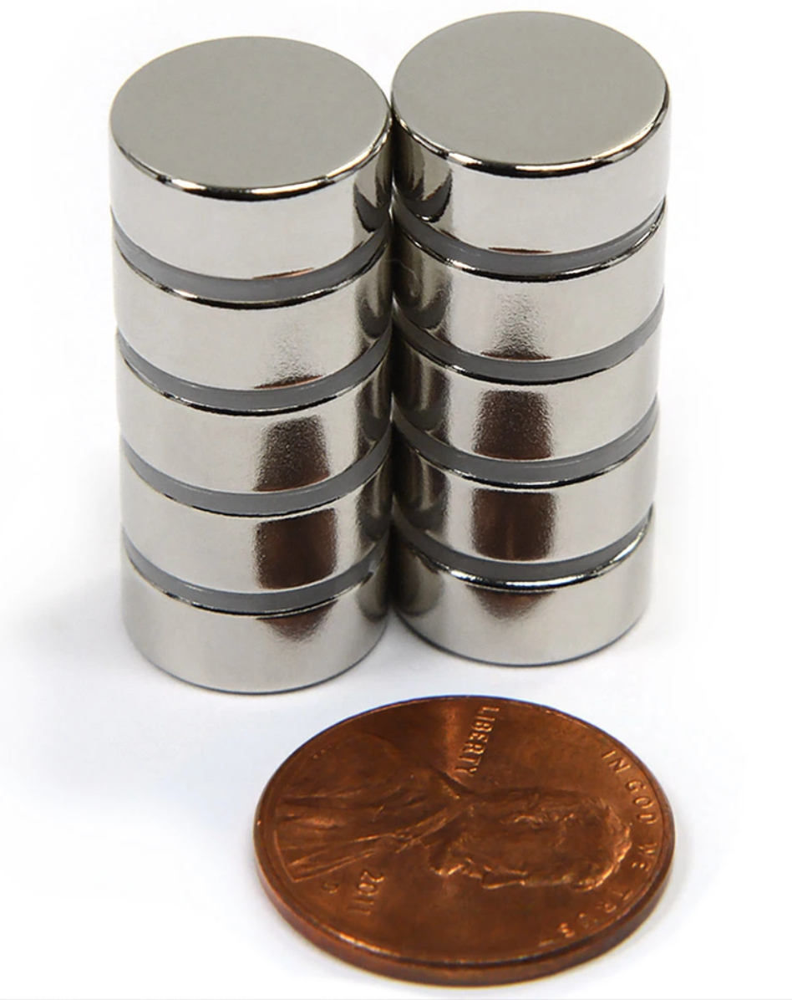
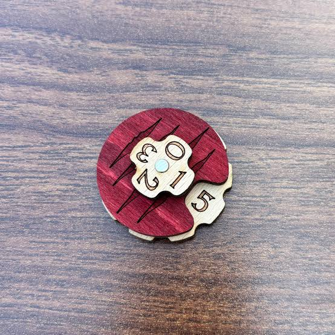
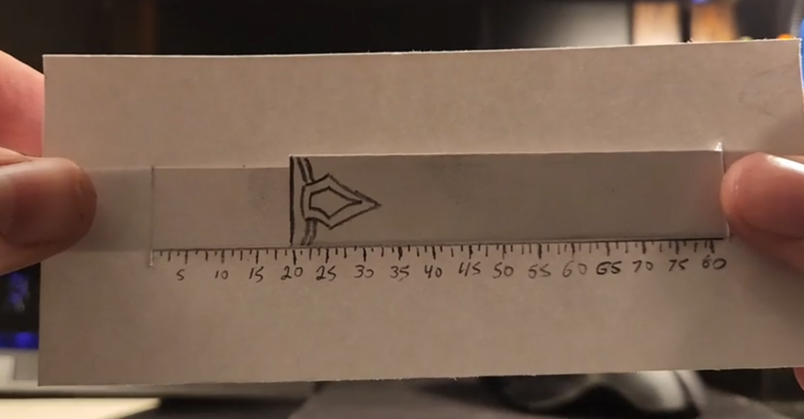
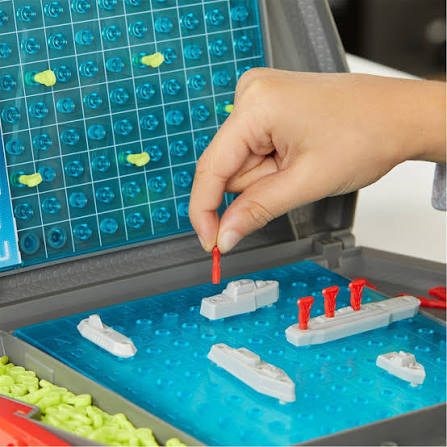
Exploring a Morale-focused Ruleset
After the discussion of various directions for performing combat, I want to first try one based on morale. Let's say every unit has a different morale score. This is their morale's health and represents the amount of 'bad' things that can happen to them before they break. I've categorized these effectors below:
- Things that reduce morale on an arbitrary 1-10 scale
- Ranged attack (1)
- Infantry melee attack (2)
- Cavalry melee attack (3)
- Artillery attack (1)
- Artillery attack from side (3) (This does more damage because more soldiers are in the field of fire when they stand in a line)
- Things that increase morale on an arbitrary 1-10 scale
- Proximity to elite units (1)
- Proximity to general (2)
- Resting for a full turn (1)
- Things that scale the above morale effects
- Being exhausted (-1)
- Attacked from the side (-1)
- Attacked from the rear (-2)
- Attacker is at higher elevation (-1)
- Dealt ranged or artillery attack while in a loose formation (+1)
- Dealt ranged or artillery attack while in a forest (+1)
- Dealt ranged or artillery attack while in or behind a fortification or building (+1)
- Dealt cavalry attack while in a square formation (+2)
- Dealt ranged or artillery attack while in a square formation (-1)
- Things that scale how much total morale a unit can have
- Unit Type. Some troops have more training than others. I think there are some very specific unit vs. unit combinations that will have to be explained with unit cards. For example, all infantry is weaker than all cavalry in melee, but becomes almost untouchable to cavalry when in square formation.
This isn't at all exhaustive, and you can see how this list might be better suited for a table, where contests of Unit A vs Unit B can be looked up. I like this limited ruleset because it abstracts a lot of the complexity, and might even move at a quick pace.